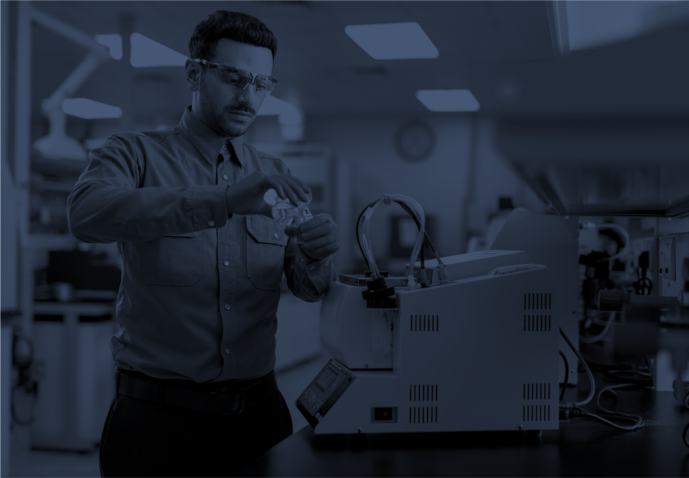
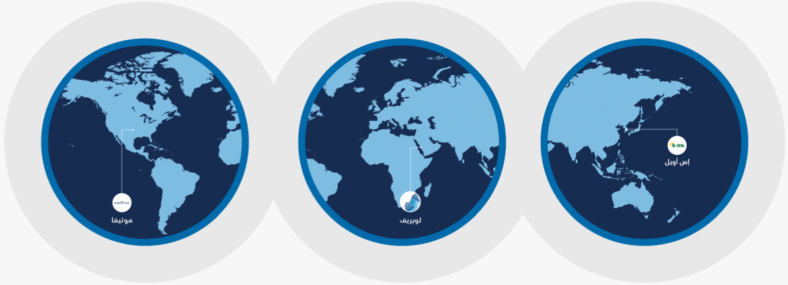
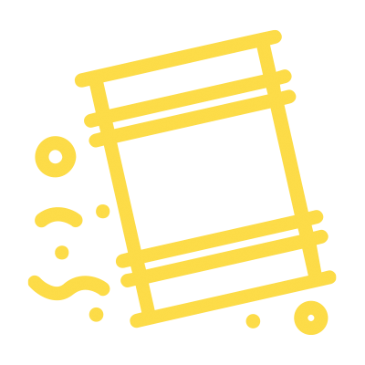
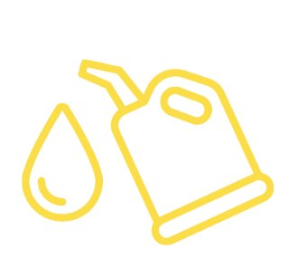
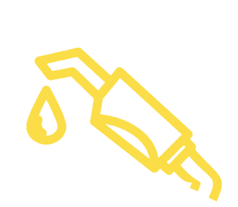
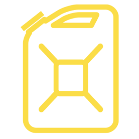

تنتج لوبريف العديد من منتجات زيوت الأساس من الفئتين الأولى والثانية إلى جانب مجموعة متنوعة من المنتجات الثانوية تشمل:

الأسفلت

زيت وقود السفن
الثقيل
الكبريت
إلى جانب المنتجات البترولية البيضاء مثل:

الديزل ذي المحتوى فائق الانخفاض من الكبريت
النافثا

سائل الحفر
تتمتع لوبريف بسمعة قوية، نظرا لجودة وموثوقية منتجاتها في سوق زيوت التشحيم العالمية، وتواصل الشركة البحث عن فرص جديدة في السوق لتحقيق النمو المستقبلي والتوسع في القطاع.
تلتزم لوبريف بالتوسع الاستراتيجي في الأسواق النهائية الرئيسية ذات النظرة المستقبلية الواعدة للطلب.
تستخدم منتجات لوبريف من قبل مجموعة واسعة من الصناعات الحيوية والأساسية والتي تؤثر منتجاتها إيجابياً على حياة الملايين من البشر حول العالم.
تعتمد لوبريف على خبرتها الواسعة في قطاع زيوت الأساس لتقديم منتجات عالية الجودة توفر الموثوقية والاتساق على نطاق عالمي.
تلبي قائمة منتجات الشركة من زيوت الأساس تطبيقات مهمة في قطاع السيارات والقطاعات البحرية والصناعية في 2023 باعت لوبريف نحو 1.3 مليون طن متري من زيوت الأساس (بما في ذلك زيوت الأساس من الفئة الثالثة) وتوزعت المبيعات بنسبة 27% في السعودية، و40% في منطقة الشرق الأوسط، و6% في إفريقيا، و17% في الهند، و10% في أسواق أخرى.